Test signals
Videre computes test material for the exact format under test: 25 patterns evaluated at each plane's own sample position, quantized once, written to raw or y4m, and read back off disk before the write reports success. The expected value at every sample is known in advance, which is what makes the measurement at the far end diagnostic.
Known answers
A measurement needs a reference whose value is known independently of the thing being measured, and footage does not provide one: any difference you find could have been in the source. A pattern does, because its codes follow from the format it was authored for. 75% white in BT.709 video range is Y 721 at 10-bit and 2884 at 12-bit. Read 940 back and the chain applied a range conversion; read a lower value with the steps collapsed and something re-quantized; read 721 with Cb or Cr off 512 and the matrix moved. The full catalogue is at the end of this page.
Videre ships no folder of pattern files. Each pattern is computed for the format, matrix, range, bit depth and chroma siting in the spec, through the same color and transfer math the scopes measure with. Patterns author in one of three value domains and quantize exactly once: code domain where exactness is the point (ramps, PLUGE, the range checker, overlays), R'G'B' signal through the active matrix (bars, charts, gamut patterns, zone plate), and nits through the PQ or HLG transfer (stairs, luminance windows, HDR ramps). Nothing stores a YCbCr table, and the nits path is the same closed form the edit surface's legalize ceiling uses, so a 1000-nit tread and a 1000-nit ceiling cannot disagree.
Chroma at its own position
A 4:2:0 file declares where its chroma samples sit: left, centre, or top-left. Videre renders each plane by evaluating the pattern at that plane's own sample position, so the chroma a file carries is the chroma its siting tag claims. The alternative, authoring at 4:4:4 and filtering down, writes a correct-looking declaration over chroma that landed somewhere else.
The chroma-siting probe is the pattern that makes this readable. Its color edges sit a quarter pixel from the luma markers beside them, which is the offset that separates the three sitings. Open the file under the wrong one and the color edge lands half a chroma sample away from its luma marker: visible at pixel zoom, and measurable in the readout.
The y4m header only spells chroma siting out for 8-bit 4:2:0. Above that, Videre refuses to write a y4m that would re-open claiming a siting it does not carry: write raw instead, or accept the mislabelling explicitly.
What the verification proves
Every written frame is read back off the finished file and byte-compared against a freshly rendered reference before the write reports success. A run says where it is by frame in two passes, so "Verifying frame 12 of 30" means the file is written and Videre is checking it. Cancel stops at the next frame, the temporary file goes with it, and anything already at the destination is left exactly as it was.
Both sides of that comparison run the same engine, so the check is about write integrity: it proves the bytes landed intact. It cannot tell you the pattern was the one you meant, and the readout says so in as many words.
Reproducible
The same specification always produces the same bytes.
videre generate--preset takes the preset names, --pattern plus --param key=value takes the same fields the window's controls carry, and --spec-file takes a full specification, which is how a clip with several segments is composed. --list-patterns and --list-presets print the catalogue with a line on what each one is for.--json writes a receipt carrying the complete specification that made the file, and feeding that receipt back through --spec-file reproduces the file byte for byte. Pattern names and preset names are frozen strings, so a pipeline that pins one keeps working.Straight back in
A generated clip is a source like any other. Open it and every scope reads it, compare it against the encode that came back and the metrics run, check it against a delivery spec in Conform mode. Preview in Videre writes the current specification to a temporary file and opens that, so the scopes measure the real thing rather than the generator window's thumbnail, which is capped at 384 pixels wide and applies no transfer.
y4m is the default output because it carries its own format, dimensions, frame rate and range, so it re-opens without going through the parameter sheet. Raw is available for everything, and required for RGB formats, which y4m has no tag for.
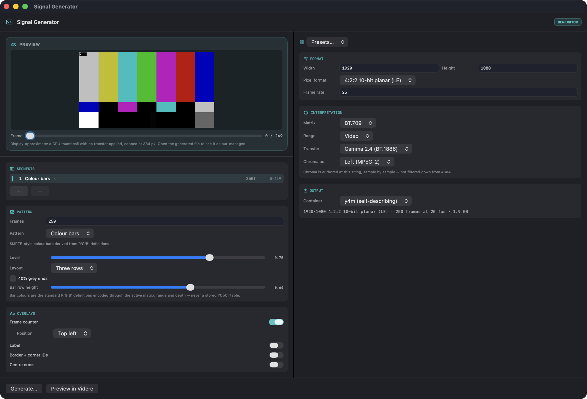
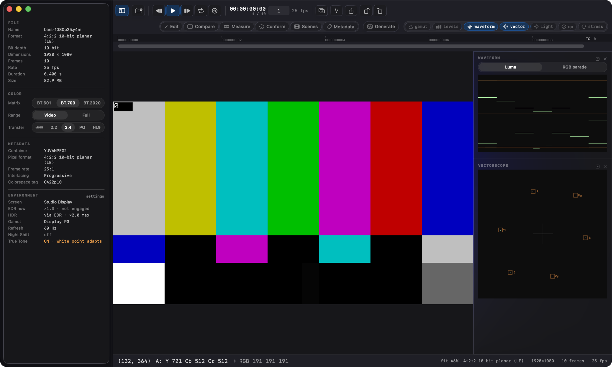
Pattern catalogue
Twenty-five patterns, each with a fault it is built to expose. The thumbnails are the generator's own preview render, which applies no transfer, so the PQ and HLG patterns read dark here; the written file is color-managed when it opens. Names in the margin are what --pattern takes.
Colour
Solid fieldsolidField
One colour over the whole frame, stated as codes, as R'G'B' signal, or as CIE xy plus a luminance in nits. Codes are written exactly; signal encodes through the active matrix and range; chromaticity goes xy and nits to XYZ, to container RGB, through the transfer, to codes.
Read: The reference for anything that measures an average: MaxFALL, region statistics, display uniformity. Set it by chromaticity when the question is what a colour measures as, by code when the question is what an exact code does.
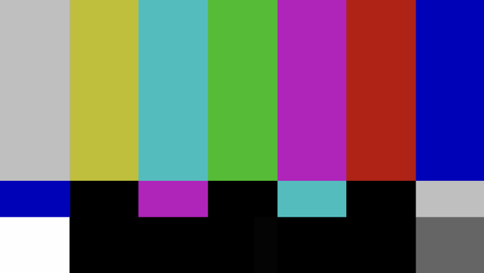
Colour barsbars
Seven bars in standard order at a stated amplitude, 75% by default, each one its standard R'G'B' definition encoded through the active matrix, range and depth. The three-row layout adds the castellation row and RP 219's half-width 40% grey bars at both ends of the main row.
Read: 75% white is code 721 at 10-bit narrow range and 2884 at 12-bit. On a vectorscope the six chroma bars land in their graticule boxes: rotation is a matrix mismatch, a radius error is a range or amplitude mismatch. A luma-only fault leaves the white and grey bars wrong while the chroma bars stay put.
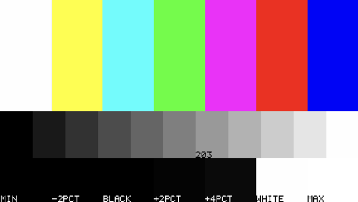
HDR barshdrBars
BT.2111-style bars inside a PQ or HLG container, with a 0 to 100% step wedge beneath them and a bottom row carrying the narrow-range data limits, black, the BT.814 PLUGE levels and full white. Markers show where diffuse white (BT.2408, 203 cd/m²) and the nominal peak fall on the wedge.
Read: The 203 cd/m² marker is where 100% SDR white maps inside the container. If a conversion or a tone-mapper moves diffuse white off that step, everything graded against it moves too. The bottom row is where a chain that clips at the data limits shows itself.
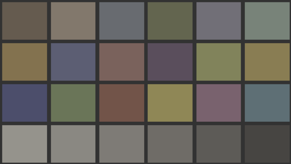
ColorChecker chartcolorChecker
24 patches from published xyY under D65, taken through the chromaticity path rather than a stored RGB table, so the chart re-derives for whatever container it is written into. Under PQ or HLG the white patch can be pinned to a chosen nits level with the rest scaling from it.
Read: Measure patches with the region statistics and compare against the published xyY; ΔE per patch is the number to report. The patch set is fixed and the derivation is stated, so results are comparable across containers, depths and machines.
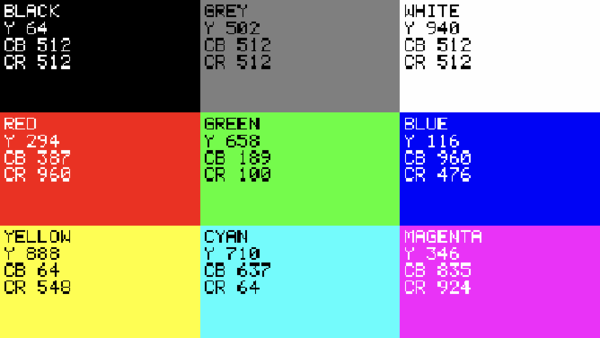
Conversion probeconversionProbe
Known R'G'B' patches with the codes they should carry drawn into the patch: BLACK Y 64 Cb 512 Cr 512, RED Y 294 Cb 337 Cr 960, and so on for BT.709 video range at 10-bit.
Read: Hover a patch and compare the readout against its own label. They agree when the file is being interpreted as declared and separate the moment anything in the chain assumes otherwise. The expected answer travels with the picture, so a screenshot from someone else's machine is enough to diagnose their chain.
Gradients
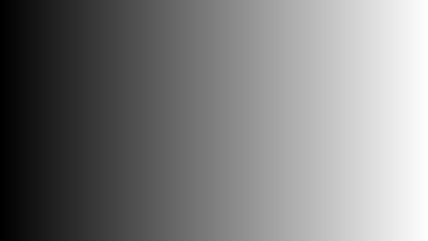
Rampramp
A linear ramp over any channel set and any code window, optionally quantized into a stated number of equal steps.
Read: Contouring and dither behaviour. The continuous form shows what an 8-bit intermediate does to a 10-bit gradient; the staircase form gives exact step edges whose position and width can be measured rather than judged.
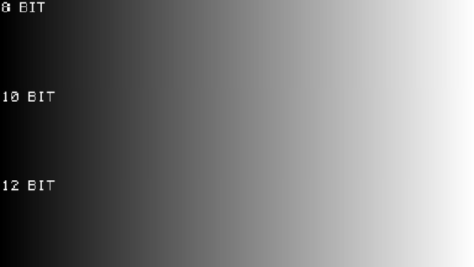
Bit-depth rampbitDepthRamp
Strips that step by one LSB at 8, 10 and 12 bit, each labelled with its depth.
Read: The strip matching the file's depth should show discrete steps. A 10-bit strip that goes flat while the 8-bit strip still steps means something truncated to 8 bits regardless of what the container declares.
Levels
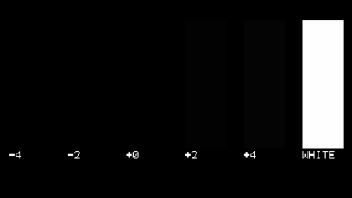
PLUGEpluge
Sub-black and above-black bars around the video-range black anchor. The levels are tabled from BT.814 rather than derived: black at 64, bars at 48 and 80 in 10-bit narrow range, scaled by 2^(depth−10) so one spec means the same physical level at every depth. A white reference block sits in the same frame.
Read: With black level correct the above-black bars are visible and the sub-black bars are not. Both visible means black is lifted; neither means it is crushed. The white block keeps a top-end reference in frame so both ends can be judged in one pass.
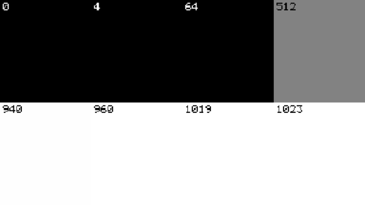
Range checkerrangeChecker
A patchwork of exact boundary codes with each code printed on its own patch. Video range at 10-bit derives 0, 4, 64, 512, 940, 960, 1019 and 1023: the container extremes, the BT.2100 narrow-range data limits, video black and white, mid grey and chroma maximum.
Read: The video/full detector. Read correctly, 64 is black and 940 is white with 0 and 1019 still distinct from them. Under a range mismatch those anchors stop behaving and the extremes clip together. Every patch carries its own code, so one still frame states which interpretation is in force.
Gamut
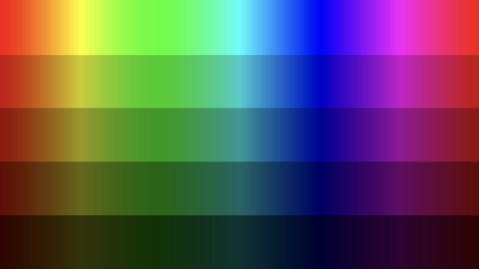
Gamut edge sweepgamutSweep
A hue sweep along the surface of the RGB cube, saturation 1 by construction (one channel at zero, one at the row value), rows stepping the value from top to bottom. Optionally expressed in a different gamut from the container, through invert(container RGB→XYZ) composed with content RGB→XYZ.
Read: Every sample starts on the gamut boundary, so any inward movement is the chain's: desaturation, hue rotation or clipping. In cross-gamut mode the cloud on the gamut scope should sit inside the content primaries' outline rather than filling the container's.
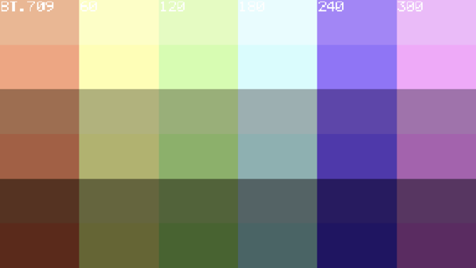
Container vs contentcontainerContent
Narrow-gamut content authored inside a wide container: one half at the content primaries, the other pushed a stated fraction of the way toward the container primary.
Read: Whether a conversion re-mapped primaries or only re-tagged them. If both halves come through a claimed gamut conversion unchanged, nothing was mapped and only the tag moved.
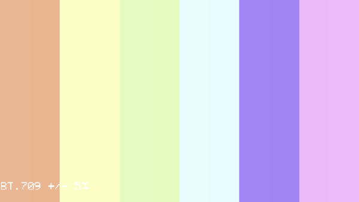
Out-of-gamut markersoutOfGamutMarkers
Patch pairs straddling a gamut boundary by a stated margin, 5% inside and 5% outside by default.
Read: A gamut-mapping stage should move the outside patch and leave the inside one alone. The pair gives a signed result instead of an impression, and the margin is part of the spec, so the same test repeats at other distances from the boundary.
Resolution and sampling
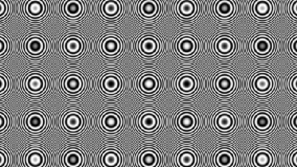
Zone platezonePlate
cos(k·r²), with the peak instantaneous frequency reached at the far corner and stated as a fraction of Nyquist. The closed form is the pattern's own oracle.
Read: Aliasing and reconstruction. A clean resampler keeps concentric rings; a poor one adds moiré rosettes and structure along the axes. Anything on screen that is not a ring came from the chain, not from the source.
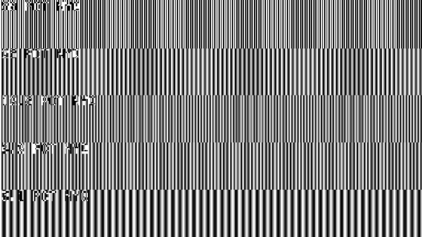
Gratingsgratings
Bands at several frequencies, per channel set, each labelled with its fraction of Nyquist. Cosine rather than sine: sin(2π·0.5·x) is zero at every integer x, so a sine grating at Nyquist samples to flat grey, while cosine gives the ±amplitude alternation the band should carry.
Read: The band where contrast collapses is the effective bandwidth of the chain. Author the chroma channel set and the high bands drop out on a subsampled path while luma survives, which separates a chroma-filter problem from a scaler problem.
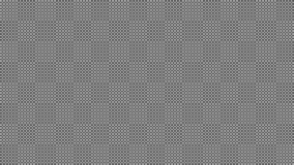
Checkerboardcheckerboard
Squares of period 1 to n pixels. Period 1 is the Nyquist checker.
Read: The 1-pixel checker is the worst case for any resampler: if it returns as flat grey, the chain is filtering rather than passing. Larger periods give a controlled edge density for compression and deblocking work.
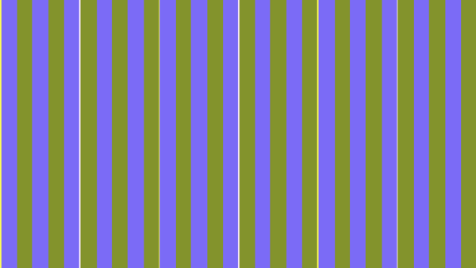
Chroma-siting probesitingProbe
Isolated chroma edges authored a quarter pixel off the nominal band boundary, each with a full-resolution luma marker on the boundary beside it. That quarter-pixel phase puts the edge exactly between the two candidate 4:2:0 phases, co-sited at 2j and centred at 2j+0.5, so the two sitings sample opposite sides of it and the stored plane genuinely differs. An impulse mode places one chroma sample per period instead of an edge.
Read: At pixel zoom the colour edge should sit on its luma marker. Under the wrong siting it separates by half a chroma sample. An edge aligned to an even pixel would be byte-identical under either siting, which is why this one is deliberately off-grid.
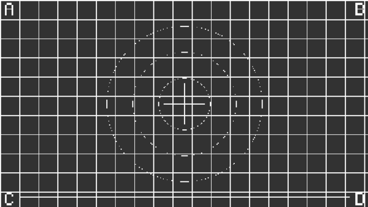
Grid / graticulegrid
A pitch grid with safe-area rectangles, circles, a 1-pixel border and lettered corner boxes A to D.
Read: Crop, pad, shift and aspect. A missing corner letter names the edge that went. Circles going elliptical means the aspect changed. A border that is no longer one pixel means a resample; a border gone entirely means an overscan crop.
HDR
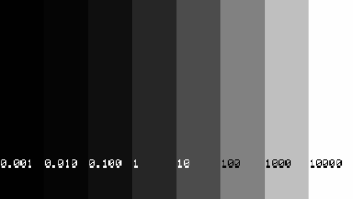
PQ stairspqStairs
Decade steps from 0.001 to 10,000 nits through the PQ or HLG curve, with optional geometric sub-steps, each tread labelled with its level. The pattern is refused under an SDR transfer rather than clamped, because a file that says 1000 nits and carries 100 is the failure this exists to avoid.
Read: Measure a tread and compare it with its label. The ladder runs the same closed form as the edit surface's legalize ceiling, so a 1000-nit tread and a 1000-nit ceiling agree by construction and any disagreement is downstream. The bottom decades show where the display or the chain stops resolving steps.
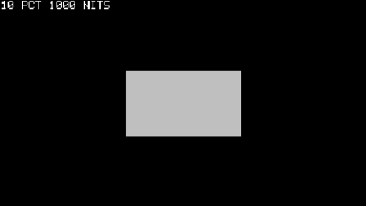
Luminance windowluminanceWindow
A window of stated area at a stated luminance on black, 10% at 1000 nits by default, labelled in frame.
Read: The standard display-measurement fixture: sustained versus peak output, automatic brightness limiting, and whether a tone-mapper's result tracks the requested level. Change the area and a display that limits will read a different level for the same request.
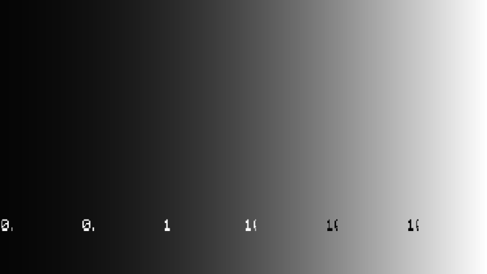
HDR grey ramphdrGrayRamp
The nits domain as a grey ramp with tick labels, geometrically spaced by default.
Read: Continuity across the decades and where a tone curve puts its knee. Banding that follows code steps is a depth or container matter; a break at the same nits value on every pass is the tone-mapper.
Temporal
Motionmotion
A bar at a constant pixels-per-frame velocity, wrapping at the frame edge so velocity stays continuous across the seam. Integer velocities keep every leading edge on a pixel boundary.
Read: Judder, frame-rate conversion and interpolation. Expected position at frame f is offset + velocity·f, modulo the span, so a stutter is a measured pixel offset rather than an impression, and an interpolated frame shows as a smeared edge sitting between two exact positions.
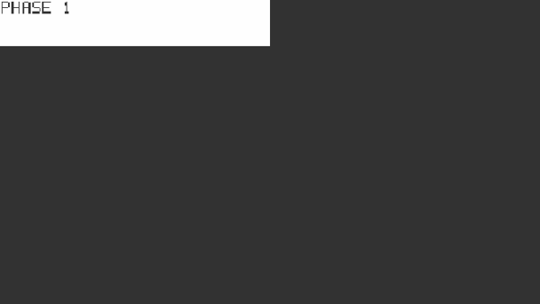
Cadencecadence
A/B frame alternation under a repeat structure: [1,1] for 1:1, [3,2] for 3:2 pulldown. Each phase carries a block whose position identifies it, so a single still frame says which phase it belongs to.
Read: Whether a chain preserved the cadence or re-timed it. Stepping frames, the phase block should march in the declared structure; a stage that claims to remove pulldown should collapse the alternation rather than shift it.
Drop detectordropDetector
A gray-code frame id in a block strip, optionally with the frame number printed beneath it. Gray coding means a single misread block shifts the answer by one frame instead of by a power of two. The strip's geometry function is shared with the decoder, and blocks are sampled at their centres, so a lightly degraded or resampled frame still reads back.
Read: Decode the strip frame by frame after a transcode. Missing ids are drops, repeated ids are duplicates, and both come out as exact frame indices. This is the pattern for the question "did we lose frames", as opposed to "does it look smooth".
Flash sequenceflash
Alternating luminance flashes at a chosen rate over a centred band covering a stated fraction of the picture, authored in nits, with a saturated-red mode for the separately-counted red-flash class. One flash is a full low to high to low pair of opposing transitions, which is what the flash-risk analysis counts.
Read: A fixture with a known rate and area to check a flash-risk indicator against. The surround holds at the low level, so the "more than 25% of the picture" limb of the criterion is authored rather than assumed. The indicator in Scenes mode is an indicator, not a certified Harding test.
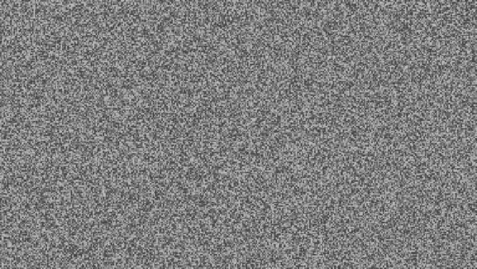
Noise fieldnoise
Per-frame seeded uniform noise, drawn from SplitMix64 over the seed, the segment index, the local frame and the pixel position. Local frame rather than timeline frame, so inserting a segment ahead of this one does not shift its noise.
Read: Incompressible input: bitrate peaks here and a denoiser's effect is unmistakable. It doubles as the null test for anything claiming to be lossless, since the same spec regenerates the exact bytes to compare against.
The full reference
Section 15 of the user guide covers the generator window, the pattern parameters, the presets, and the command line.